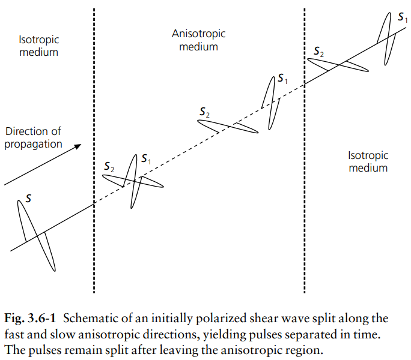
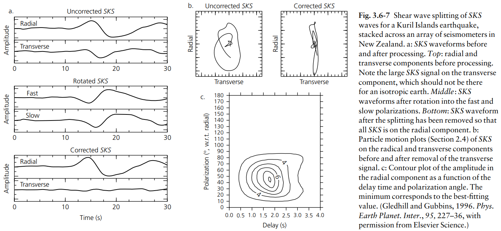
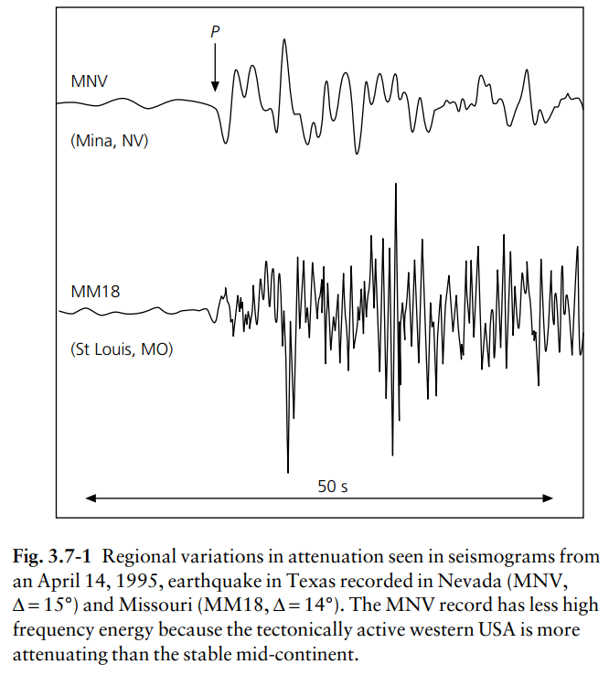
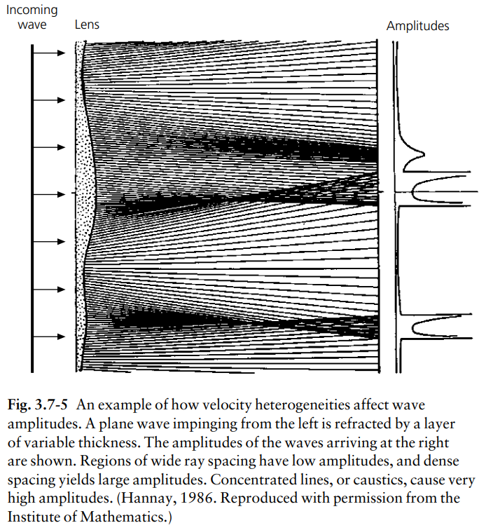
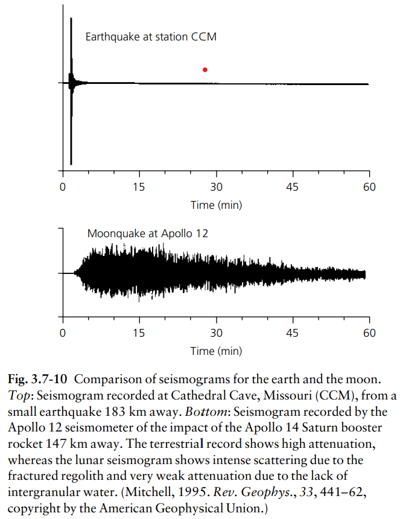
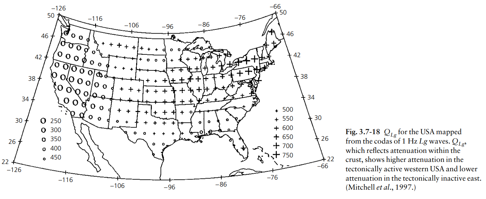

3.1 Introduction (地震學與地球內部結構簡介)
地震學是一門研究彈性波在地球內部傳播的科學。透過分析地震波，科學家得以窺探地球深處的神秘結構。地球內部並非均勻的實體，而是由不同化學成分與物理狀態的層圈所組成，包括地殼 (Crust)、地函 (Mantle) 以及地核 (Core)。我們無法直接鑽探到地球深處，因此地震波成為了我們探索地球內部的「X 光」。
當地震發生或人為爆炸時，會產生巨大的能量並以彈性波的形式向四面八方傳播。這些波在傳遞過程中，會受到地球內部介質的密度、彈性模量（如體積模量與剪力模量）等物理性質影響，進而發生反射、折射、散射以及衰減等現象。透過在全球各地佈建密集的地震測站網路，科學家可以記錄這些地震波到達地表的精確時間、振幅與頻率特徵。
在地震學的發展歷史中，早期的科學家利用走時曲線 (Travel-time curves) 來推斷地球內部的分層結構。他們發現，地震波速隨著深度的增加，整體趨勢是逐漸變快的，這是因為地球內部的壓力隨著深度急遽增加，使得岩石變得更加緻密。然而，這種波速的增加並非總是平滑的，在某些特定的深度，波速會發生不連續的跳躍，這代表著地球內部存在著明顯的化學成分或相態邊界。
除了層狀結構，現代地震學更進一步利用地震層析成像技術 (Seismic Tomography) 來揭示地球內部的三維非均勻性。這使得我們能夠觀察到隱藏在地函深處的熱對流系統，例如隱沒的冷岩石圈板塊以及從核幔邊界上升的熱柱 (Mantle Plumes)。這些發現對於理解板塊構造學說的驅動力以及地球的熱化學演化具有決定性的意義。
本章節（第三章）將從最基本的震測折射與反射原理出發，逐步探討地震波在球狀地球中的傳播特性，並介紹如何利用體波走時、波速非均向性以及能量衰減等觀測資料，來建構出高解析度的地球內部結構模型。理解這些基礎概念，是深入研究全球地震學與地球內部動力學的必經之路。
3.2 Refraction seismology (震測折射法與地殼結構)
震測折射法 (Refraction Seismology) 是利用地震波在不同波速介層交界面發生臨界折射的原理，來探測地下分層結構的技術。當地震波從低速層傳遞到高速層時，根據斯涅爾定律 (Snell's Law)，當入射角達到臨界角時，折射波會沿著交界面滑行，產生頭波 (Head wave)。
1. Pg、Pn、PmP 說明
在探討地殼與上部地函結構時，我們經常使用特定的波相命名：
- Pg 波：在地殼上層內部傳遞的直達 P 波。波速較慢（大約 5.8 ~ 6.2 km/s），在震央距離較近處是最先到達的地震波。
- Pn 波：沿著莫氏不連續面 (Moho) 下方的地函頂部滑行並產生折射回到地表的 P 波。由於波速較快（大約 7.8 ~ 8.2 km/s），在遠處測站會超越 Pg 波成為 First arrival。
- PmP 波：在莫氏不連續面 (Moho) 上發生廣角反射的 P 波，能量通常很強。
2. 如何發現 Moho 面？
1909 年，莫霍洛維奇在分析地震觀測紀錄時，注意到近處測站先收到慢的直達波 (Pg)；而遠處測站先收到快的折射波 (Pn)。這表示地下必然存在一個地震波速明顯躍升的高速介面，使得 Pn 波因為進入高速層而能超越 Pg 波。此介面即被命名為莫氏不連續面 (Moho)。
3. 全球 Moho 面的深度分布？
- 大洋地殼：海洋板塊較薄且均勻，Moho 面深度平均約為 5 到 10 公里。
- 大陸地殼：大陸板塊較厚，Moho 面深度平均約為 30 到 40 公里。而在活躍造山帶（如喜馬拉雅山脈），因地殼根效應，Moho 面可深達 70 公里以上。
3.3 Reflection seismology (震測反射法)
震測反射法 (Reflection Seismology) 是解析度最高的技術之一，廣泛應用於石油探勘與地殼研究。它利用地震波遇到地下不同聲阻抗 (Acoustic Impedance, 密度與波速的乘積) 介面時產生的反射訊號來進行成像。
資料處理流程包括動態修正 (NMO)、共深點重疊 (CDP Stacking) 與偏移成像 (Migration)。在全球地震學中，也利用反射原理來研究深部構造，例如核幔邊界反射波 (PcP) 來探測地函內部的精細分層。
3.4 Seismic waves in a spherical earth (球狀地球中的地震波)
在球狀地球模型中，地震射線的路徑會因為波速隨深度的變化而發生彎曲，必須考慮地球曲率的影響。
4. 甚麼是 ray parameter (射線參數)？
射線參數 (Ray parameter, \(p\)) 代表地震波的水平慢度。在球狀地球模型中，\(p = \frac{r \sin i}{v}\)，其中 \(r\) 是半徑，\(i\) 是入射角，\(v\) 是波速。在球對稱模型中，同一條射線在傳遞過程中的 \(p\) 是一個守恆常數。
5. 為何遇到高速帶，接收站會接收到多次到時？
在某些深度（如 410 km 與 660 km 相變帶），波速隨深度急遽增加（高速帶）。射線穿過這些梯度極大的區域時會發生強烈向上折射，導致不同發射角度的射線在地表某個距離區間交疊。這稱為三叉現象 (Triplication)，使得同一個測站會觀測到來自同源的多個同相波多次到時。
6. 為何遇到低速帶，接收站會收不到波？
當地層存在波速下降的低速帶 (LVZ) 時，折射角會小於入射角，使得射線向下彎曲偏向地心。這導致在地表某距離範圍內出現沒有直達波射線能夠到達的區域，即陰影區 (Shadow Zone)。接收站將無法接收到直達波。
3.5 Body wave travel time studies (體波走時研究)
體波走時研究是利用全球觀測網的抵達時間，反演出地球內部一維速度結構與三維異常的最主要方法。
7. 如何發現核幔邊界 (Core-Mantle Boundary)？
1914 年古登堡發現，在距震央 103° 到 143° 的地帶測站完全接收不到直達 P 波，形成「P波陰影區」。這是因為 P 波深入地球遇到液態外核時，波速驟降（從 13.7 降至 8.0 km/s），發生強烈向下折射。這證實了地球內部存在性質截然不同的深部交界面，即核幔邊界 (CMB)。
8. 各種體波波相介紹
- P / S：僅在地函傳遞的直達波。
- PP / SS：地表反射波。
- c (如 PcP)：核幔邊界 (CMB) 反射波。
- K (如 PKP)：穿透液態外核的 P 波。
- I (如 PKIKP)：穿透固態內核的 P 波。
- J：穿透內核的 S 波。
- i (如 PKiKP)：內核表面反射波。
9. Core phases 介紹
Core phases 是指穿透深處與地核發生交互作用的波相。包括測量 CMB 的邊界反射波 (PcP)、受外核折射複雜的穿透外核波 (PKP, SKS)，以及證實內核固態的內核相關波 (PKIKP, PKiKP)。
10. 甚麼是 antipodal focusing (對蹠點聚焦)？
因為地球近似完美球體，向地球內部輻射的穿透地核地震波 (如 PKP)，會在地球內部折射後，最終於震央正對面（距 180° 的對蹠點）重新交會匯聚。這種幾何聚焦效應會像透鏡般，使得對蹠點附近的地震波振幅異常放大。
3.6 Anisotropic earth structure (地球的非均向性結構)
11. 解釋 Upper mantle structure (低速帶與高速帶)
低速帶 (LVZ)：約 100~250 公里深，波速微降。對應軟流圈頂部，含有少量部分熔融或揮發物，剪力強度降低。
高速帶：約 410 公里與 660 公里深。因極大壓力使礦物晶格崩潰發生相變，密度與彈性模量躍升，波速急遽增加。
12. 說明 Anisotropic earth structure
介質波速因「前進方向」或「極化方向」不同而改變的現象。主要來源是地函因熱對流或板塊剪切，使得橄欖石等晶格產生規律排列 (LPO)，造成巨觀的非均向性。
13. 說明剪力波分離？
S 波穿透非均向性介質時，會分裂成兩個偏振方向互相垂直且速度不同的獨立波：快 S 波與慢 S 波。這類似光學的雙折射。兩者的時間差與極化方向可推測地下的應力與動力學特徵。
14. 為何使用 SKS 波相研究剪力波分離？
SKS 波在穿過液態外核時是無偏振方向的 P 波。當它離開外核轉回 S 波時，初始偏振方向被嚴格限制在徑向平面。這保證它進入接收測站下方前不受震源端構造干擾，所觀測到的分離完全來自於測站下方的地函非均向性。
15. 解釋圖 3.6-1 與 3.6-7


3.7 Attenuation and anelasticity (衰減與非彈性)
16. 波傳遞時能量如何衰減？
兩種機制：
1. 幾何擴散：隨波前向外擴張，總能量分配到更大表面積，能量密度降低。
2. 內在衰減 (非彈性)：岩石晶界摩擦或流體流動將機械能轉換為熱能耗散，通常以品質因子 (Q 值) 衡量，Q 越低衰減越嚴重。
17. 解釋圖 3.7-1

18. 解釋圖 3.7-5

19. 解釋圖 3.7-10

20. 解釋圖 3.7-18

3.8 Composition of the mantle and the core (地函與地核的成分)
透過地震波速、密度分布及高溫高壓實驗的比對，科學家得以推敲出地球內部各層圈的化學組成。
地函 (Mantle)
主要由矽酸鹽岩石組成：
- 上部地函：主要成分是橄欖岩，富含橄欖石及少量的輝石與石榴子石。
- 地函過渡帶：隨壓力增加，橄欖石發生相變，轉為瓦茲利石和林伍德石等尖晶石結構。
- 下部地函：尖晶石結構進一步崩解，轉為橋錳礦與方鎂石。
地核 (Core)
主要由鐵 (Iron) 和鎳 (Nickel) 合金組成：
- 外核：S波無法穿透，證明其為液態。外核密度略低於純鐵鎳，表示溶有硫、氧等輕元素。外核熱對流產生了地球主磁場。
- 內核：因極端超高壓力轉變為固態。觀測顯示內核具有非均向性，代表鐵晶體可能順著自轉軸產生了整齊排列。